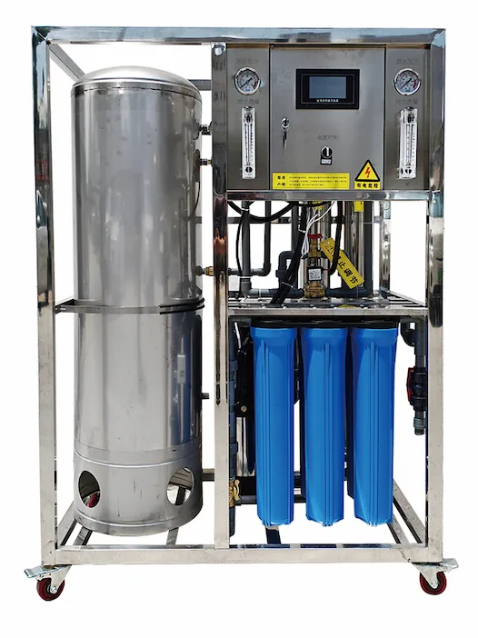
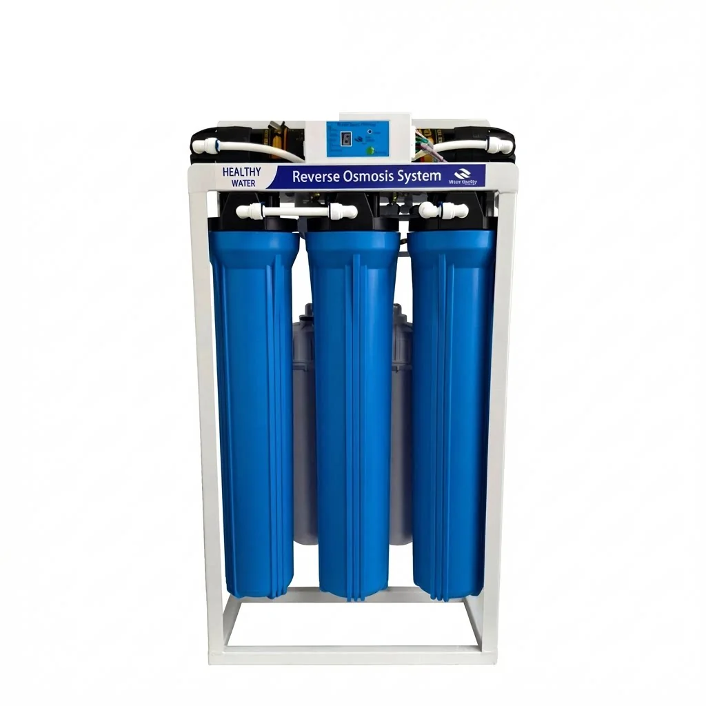

Thiết bị xử lý nước thẩm thấu ngược công nghiệp quy mô lớn 3-100 TPH
Gửi yêu cầuThiết bị xử lý nước thẩm thấu ngược công nghiệp quy mô lớn 3-100 TPH — Lưu lượng nước tinh khiết: 3-100 t/h.

Thiết bị thẩm thấu ngược có sáu cốc lọc và bồn chứa nước tinh khiết 250-1000 L/h là hệ thống thẩm thấu ngược công nghiệp dành cho bên mua thiết bị phục vụ dự án cần thông tin rõ ràng về phân tích nước cấp, lưu lượng đầu ra mục tiêu, tỷ lệ thu hồi, thiết kế tiền xử lý, lựa chọn bơm, cấu hình bố trí màng và logic của tủ điều khiển. Các thông số kỹ thuật chính gồm lưu lượng nước tinh khiết: 250-1000 L/h.
Thông số của thiết bị thẩm thấu ngược có sáu cốc lọc và bồn chứa nước tinh khiết 250-1000 L/h nên được xác định dựa trên phân tích nước cấp, chất lượng mục tiêu của nước thấm qua màng, số giờ vận hành, tỷ lệ thu hồi, tiền xử lý, lựa chọn bơm, cấu hình bố trí màng và yêu cầu đối với tủ điều khiển. Những thông tin này giúp báo giá thiết bị xử lý nước RO công nghiệp có giá trị sử dụng đối với các nhà máy, thay vì chỉ là danh sách thiết bị chung chung.
Đối với thiết bị thẩm thấu ngược có sáu cốc lọc và bồn chứa nước tinh khiết 250-1000 L/h, các trang thông tin về cốc lọc nên giúp người mua dễ dàng so sánh khả năng tương thích và điều kiện vận hành. Vật liệu, ren kết nối, áp suất, phương pháp làm kín và kích thước lõi lọc quan trọng hơn việc lặp lại các tuyên bố của nhà sản xuất.
| Hạng mục | Thông số |
|---|---|
| Loại sản phẩm | Thiết bị thẩm thấu ngược có sáu vỏ chứa và bồn chứa nước tinh khiết 250-1000 L/h |
| Chế độ vận hành | Vận hành thông minh hoàn toàn tự động, với chế độ thao tác thủ công phục vụ bảo dưỡng theo nhu cầu dự án |
| Quy trình xử lý | Lõi PP 20″ + lõi CTO 20″ + lõi PP 20″ + RO |
| Lưu lượng nước tinh khiết | 250-1000 L/h |
| Nước cấp | Nước máy và nước ngầm |
| Áp suất nước cấp | 0.1-0.4 MPa |
| Tùy chỉnh theo dự án | Bố trí và hệ thống điều khiển của dự án có thể được điều chỉnh sau khi đánh giá nguồn nước |
| Ứng dụng | Các dự án cấp nước uống thương mại và xử lý nước |
| OEM/ODM | Cấu hình được xác nhận theo yêu cầu kỹ thuật của dự án |
| Số lượng đặt hàng tối thiểu (MOQ) | Được xác nhận dựa trên công suất, cấu hình và mức độ OEM |
Lõi PP 20″ + lõi CTO 20″ + lõi PP 20″ + RO; 250-1000 L/h; Nước máy và nước ngầm.
| Quy trình xử lý | Lõi PP 20″ + lõi CTO 20″ + lõi PP 20″ + RO |
|---|---|
| Nước cấp | Nước máy và nước ngầm |
| Áp suất nước cấp | 0.1-0.4 MPa |
| Tùy chỉnh theo dự án | Bố trí và hệ thống điều khiển của dự án có thể được điều chỉnh sau khi đánh giá nguồn nước |
Lõi PP 20″ + lõi CTO 20″ + lõi PP 20″ + RO
250-1000 L/h
0.1-0.4 MPa
Bố trí và hệ thống điều khiển của dự án có thể được điều chỉnh sau khi đánh giá nguồn nước
Thiết bị xử lý nước thẩm thấu ngược công nghiệp quy mô lớn 3-100 TPH — Lưu lượng nước tinh khiết: 3-100 t/h.

Thiết bị RO khử mặn nước biển quy mô nhỏ và vừa — Tỷ lệ loại bỏ nitrat: ≥90%.

Máy lọc nước RO thương mại 20-inch 800G/1200G/1600G/2000G — Các cấp lọc: Lọc năm cấp với lõi lọc cặn PP, lõi than trước màng, màng RO, lõi than sau màng hoặc trình tự lõi lọc tùy chỉnh.